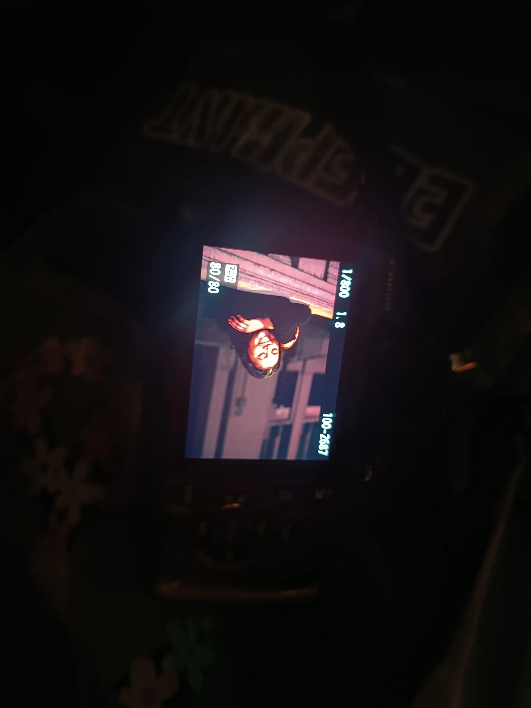
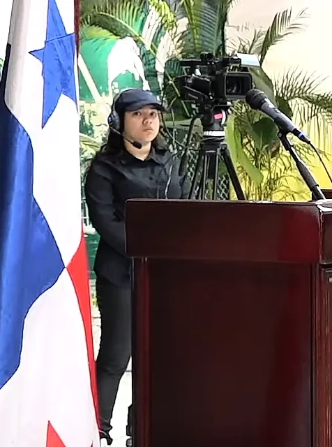
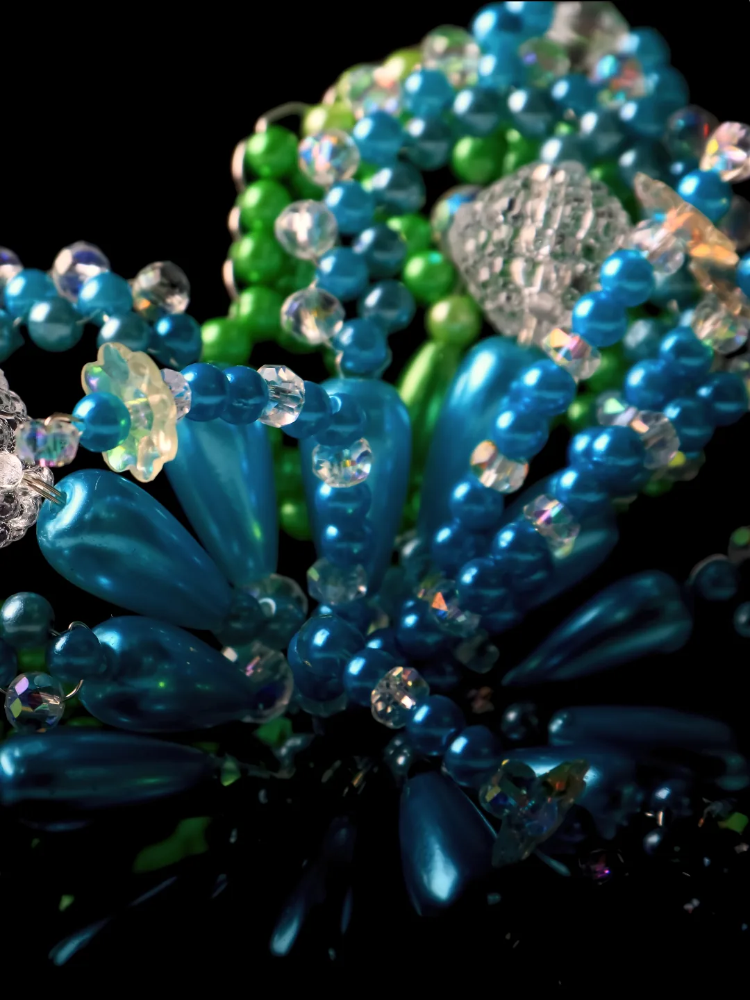
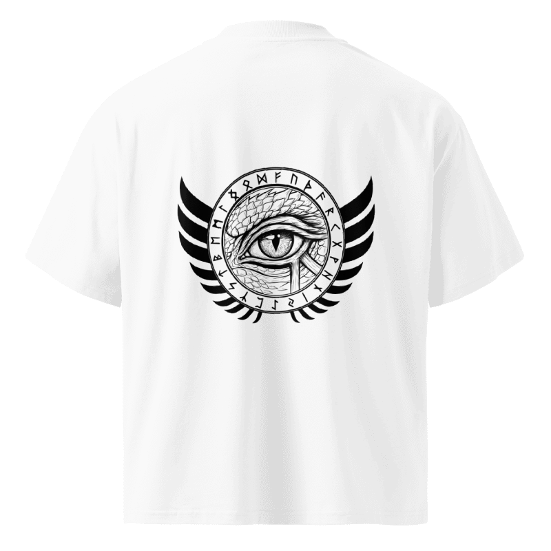

CONTENIDO
Producir con intención
Producción audiovisual, fotografía y edición para construir una presencia reconocible.

NUESTRO ENFOQUE
No significa hacer películas de Hollywood en vertical. Significa llevar intención cinematográfica a los formatos donde realmente está la gente.
De una pieza a una presencia completa.
CONTENIDO
Producción audiovisual, fotografía y edición para construir una presencia reconocible.
CAMPAÑAS
Concepto, dirección, producción y ejecución unidos por una sola idea publicitaria.
PRESENCIA FÍSICA
Medios, POP, producción gráfica e implementación coordinados mediante aliados especializados.
La producción también es criterio.


